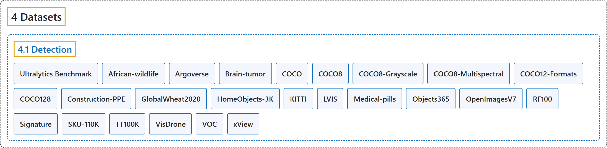

4.1 Detection
Classification

Glossary
| Term | Definition | 中文翻译 | Source |
|---|---|---|---|
| 4.1 Detection 检测数据集 |
(context) "This guide introduces various formats of datasets that are compatible with the Ultralytics YOLO model and provides insights into their structure, usage, and how to convert between different formats." | （语境）本指南介绍与 Ultralytics YOLO 模型兼容的各种数据集格式，并说明它们的结构、用法以及如何在不同格式之间转换。 | Ultralytics, n.d.-p, "Object Detection Datasets Overview", para. 1 |
| Ultralytics Benchmark Ultralytics 基准 |
"Ultralytics Benchmark is a benchmark dataset for measuring model generalizability) across 37 curated object detection datasets with high-quality bounding box labels." | Ultralytics Benchmark 是一个衡量模型泛化能力的基准数据集，涵盖 37 个精选的、带高质量边界框标注的目标检测数据集。 | Ultralytics, n.d.-x, "Ultralytics Benchmark", para. 1 |
| African-wildlife 非洲野生动物 |
"The Ultralytics African Wildlife Dataset is an object detection dataset of 1,504 images across 4 animal classes — buffalo, elephant, rhino, and zebra — commonly found in South African nature reserves." | Ultralytics 非洲野生动物数据集是一个目标检测数据集，含 1,504 张图像、4 个动物类别：水牛、大象、犀牛和斑马，都是南非自然保护区常见的动物。 | Ultralytics, n.d.-a, "African Wildlife Dataset", para. 1 |
| Argoverse Argoverse |
"The Ultralytics Argoverse dataset (Argoverse-HD) is a 2D object detection dataset of 54,446 labeled autonomous-driving images — 39,384 for training and 15,062 for validation — across 8 classes: person, bicycle, car, motorcycle, bus, truck, traffic light, and stop sign." | Ultralytics Argoverse 数据集（Argoverse-HD）是一个二维目标检测数据集，含 54,446 张带标注的自动驾驶图像（训练 39,384 张，验证 15,062 张），共 8 个类别：行人、自行车、汽车、摩托车、公交车、卡车、交通灯和停车标志。 | Ultralytics, n.d.-b, "Argoverse Dataset", para. 1 |
| Brain-tumor 脑肿瘤 |
"The Ultralytics Brain Tumor dataset is an object detection dataset of 1,116 medical images (893 for training and 223 for validation) from MRI and CT scans, labeled across 2 classes: negative (no tumor) and positive (tumor present)." | Ultralytics 脑肿瘤数据集是一个目标检测数据集，含 1,116 张医学图像（训练 893 张，验证 223 张），来自 MRI 和 CT 扫描，标注为两个类别：negative（无肿瘤）和 positive（有肿瘤）。 | Ultralytics, n.d.-c, "Brain Tumor Dataset", para. 1 |
| COCO COCO |
"The COCO (Common Objects in Context) dataset is a large-scale object detection, segmentation, and captioning dataset." | COCO（Common Objects in Context）数据集是一个大规模的目标检测、分割和图像描述数据集。 | Ultralytics, n.d.-d, "COCO Dataset", para. 1 |
| COCO8 COCO8 |
"The Ultralytics COCO8 dataset is a compact yet powerful object detection dataset, consisting of the first 8 images from the COCO train 2017 set—4 for training and 4 for validation." | Ultralytics COCO8 数据集是一个小巧而强大的目标检测数据集，由 COCO train 2017 集的前 8 张图像组成：4 张训练，4 张验证。 | Ultralytics, n.d.-g, "COCO8 Dataset", para. 1 |
| COCO8-Grayscale COCO8 灰度版 |
"The Ultralytics COCO8-Grayscale dataset is a compact yet powerful object detection dataset, consisting of the first 8 images from the COCO train 2017 set and converted to grayscale format—4 for training and 4 for validation." | Ultralytics COCO8 灰度数据集是一个小巧而强大的目标检测数据集，由 COCO train 2017 集的前 8 张图像转换为灰度格式而成：4 张训练，4 张验证。 | Ultralytics, n.d.-h, "COCO8-Grayscale Dataset", para. 1 |
| COCO8-Multispectral COCO8 多光谱版 |
"The Ultralytics COCO8-Multispectral dataset is an advanced variant of the original COCO8 dataset, designed to facilitate experimentation with multispectral object detection models." | Ultralytics COCO8 多光谱数据集是原始 COCO8 数据集的进阶变体，用于方便地试验多光谱目标检测模型。 | Ultralytics, n.d.-i, "COCO8-Multispectral Dataset", para. 1 |
| COCO12-Formats COCO12 多格式版 |
"The Ultralytics COCO12-Formats dataset is a specialized test dataset designed to validate image loading across 12 supported image format extensions." | Ultralytics COCO12 多格式数据集是一个专用测试数据集，用于验证对 12 种受支持图像格式扩展名的加载。 | Ultralytics, n.d.-e, "COCO12-Formats Dataset", para. 1 |
| COCO128 COCO128 |
"Ultralytics COCO128 is a small, but versatile object detection dataset composed of the first 128 images of the COCO train 2017 set." | Ultralytics COCO128 是一个小而多用途的目标检测数据集，由 COCO train 2017 集的前 128 张图像组成。 | Ultralytics, n.d.-f, "COCO128 Dataset", para. 1 |
| Construction-PPE 施工个人防护装备 |
"The Ultralytics Construction-PPE dataset is an object detection dataset of 1,416 images (1,132 for training, 143 for validation, and 141 for testing) labeled across 11 classes for detecting personal protective equipment — helmets, gloves, vests, boots, and goggles — and flagging missing gear on construction sites." | Ultralytics 施工个人防护装备数据集是一个目标检测数据集，含 1,416 张图像（训练 1,132 张、验证 143 张、测试 141 张），标注了 11 个类别，用于检测安全帽、手套、背心、靴子和护目镜等个人防护装备，并标出施工现场缺少的装备。 | Ultralytics, n.d.-j, "Construction-PPE Dataset", para. 1 |
| GlobalWheat2020 全球麦穗 2020 |
"The Global Wheat Head Dataset (GWHD) is a single-class object detection dataset for detecting wheat heads — the grain-bearing spikes of the wheat plant — in outdoor field images." | 全球麦穗数据集（GWHD）是一个单类别目标检测数据集，用于在室外田间图像中检测麦穗，即小麦植株上结籽的穗。 | Ultralytics, n.d.-k, "Global Wheat Head Dataset", para. 1 |
| HomeObjects-3K 家居物品 3K |
"The Ultralytics HomeObjects-3K dataset is an indoor object detection dataset of 2,689 images (2,285 training and 404 validation) labeled across 12 everyday household classes — bed, sofa, chair, table, lamp, tv, laptop, wardrobe, window, door, potted plant, and photo frame." | Ultralytics 家居物品 3K 数据集是一个室内目标检测数据集，含 2,689 张图像（训练 2,285 张，验证 404 张），标注了 12 个日常家居类别：床、沙发、椅子、桌子、灯、电视、笔记本电脑、衣柜、窗户、门、盆栽和相框。 | Ultralytics, n.d.-l, "HomeObjects-3K Dataset", para. 1 |
| KITTI KITTI |
"The Ultralytics KITTI dataset is a 2D object detection dataset for autonomous driving, containing 7,481 annotated images (5,985 for training and 1,496 for validation) across 8 classes — car, van, truck, pedestrian, person_sitting, cyclist, tram, and misc." | Ultralytics KITTI 数据集是一个用于自动驾驶的二维目标检测数据集，含 7,481 张标注图像（训练 5,985 张，验证 1,496 张），共 8 个类别：汽车、厢式车、卡车、行人、坐着的人、骑车人、电车和其他。 | Ultralytics, n.d.-m, "KITTI Dataset", para. 1 |
| LVIS LVIS |
"The LVIS dataset is a large-scale object detection and instance segmentation benchmark with 1,203 object categories across roughly 160,000 images." | LVIS 数据集是一个大规模的目标检测和实例分割基准，约 16 万张图像，涵盖 1,203 个物体类别。 | Ultralytics, n.d.-n, "LVIS Dataset", para. 1 |
| Medical-pills 药片 |
"The Ultralytics Medical Pills dataset is a proof-of-concept (POC) object detection dataset of 115 labeled images across a single class, pill — 92 for training and 23 for validation." | Ultralytics 药片数据集是一个概念验证（POC）目标检测数据集，含 115 张带标注的图像，只有一个类别：pill（药片），训练 92 张，验证 23 张。 | Ultralytics, n.d.-o, "Medical Pills Dataset", para. 1 |
| Objects365 Objects365 |
"The Objects365 dataset is a large-scale object detection benchmark with 1,742,289 training images and 80,000 validation images spanning 365 object classes — from people, cars, and chairs to bottles, dogs, and street lights." | Objects365 数据集是一个大规模目标检测基准，含 1,742,289 张训练图像和 80,000 张验证图像，涵盖 365 个物体类别：从人、汽车、椅子到瓶子、狗和路灯。 | Ultralytics, n.d.-q, "Objects365 Dataset", para. 1 |
| OpenImagesV7 Open Images V7 |
"Open Images V7 is a large-scale object detection dataset created by Google, with 1,743,042 training images and 41,620 validation images across 601 object classes in the Ultralytics configuration." | Open Images V7 是谷歌创建的大规模目标检测数据集，在 Ultralytics 配置中含 1,743,042 张训练图像和 41,620 张验证图像，涵盖 601 个物体类别。 | Ultralytics, n.d.-r, "Open Images V7 Dataset", para. 1 |
| RF100 Roboflow 100 |
"Roboflow 100, sponsored by Intel, is a groundbreaking object detection benchmark dataset." | Roboflow 100 由英特尔赞助，是一个开创性的目标检测基准数据集。 | Ultralytics, n.d.-t, "Roboflow 100 Dataset", para. 1 |
| Signature 签名 |
"The Ultralytics Signature Detection Dataset is an object detection dataset of 178 document images annotated with a single signature class, pre-split into 143 training and 35 validation images." | Ultralytics 签名检测数据集是一个目标检测数据集，含 178 张文档图像，只标注了 signature（签名）一个类别，已预先划分为 143 张训练图像和 35 张验证图像。 | Ultralytics, n.d.-u, "Signature Detection Dataset", para. 1 |
| SKU-110K SKU-110K |
"The SKU-110K dataset is a single-class object detection dataset of 11,743 densely packed retail-shelf images, split into 8,219 training, 588 validation, and 2,936 test images." | SKU-110K 数据集是一个单类别目标检测数据集，含 11,743 张商品密集的零售货架图像，划分为训练 8,219 张、验证 588 张、测试 2,936 张。 | Ultralytics, n.d.-v, "SKU-110K Dataset", para. 1 |
| TT100K TT100K |
"The Tsinghua-Tencent 100K (TT100K) dataset is a traffic-sign benchmark for object detection, created by Zhu et al. for the CVPR 2016 paper Traffic-Sign Detection and Classification in the Wild." | 清华-腾讯 100K（TT100K）数据集是一个用于目标检测的交通标志基准，由 Zhu 等人为 CVPR 2016 论文 Traffic-Sign Detection and Classification in the Wild 创建。 | Ultralytics, n.d.-w, "TT100K Dataset", para. 1 |
| VisDrone VisDrone |
"The VisDrone Dataset is a large-scale drone-imagery benchmark whose detection subset (VisDrone2019-DET) provides 8,629 aerial images — 6,471 train, 548 validation, and 1,610 test-dev — annotated with 10 object classes for object detection." | VisDrone 数据集是一个大规模的无人机影像基准，其检测子集（VisDrone2019-DET）提供 8,629 张航拍图像（训练 6,471 张、验证 548 张、test-dev 1,610 张），标注了 10 个物体类别，用于目标检测。 | Ultralytics, n.d.-y, "VisDrone Dataset", para. 1 |
| VOC VOC |
"The PASCAL VOC (Visual Object Classes) dataset is a classic object detection benchmark with 20 everyday object classes." | PASCAL VOC（视觉物体类别）数据集是一个经典的目标检测基准，含 20 个日常物体类别。 | Ultralytics, n.d.-s, "PASCAL VOC Dataset", para. 1 |
| xView xView |
"The xView dataset is one of the largest publicly available satellite-imagery benchmarks for object detection, providing over 1 million object instances across 60 classes annotated with bounding boxes in more than 1,400 km² of 0.3 m WorldView-3 imagery." | xView 数据集是最大的公开卫星影像目标检测基准之一，在超过 1,400 平方公里、分辨率 0.3 米的 WorldView-3 影像中，用边界框标注了 60 个类别、超过 100 万个物体实例。 | Ultralytics, n.d.-z, "xView Dataset", para. 1 |
References
Ultralytics. (n.d.-a). African Wildlife Dataset. Ultralytics YOLO Docs (ultralytics 8.4.194). Retrieved October 31, 2026, from https://docs.ultralytics.com/datasets/detect/african-wildlife/
Ultralytics. (n.d.-b). Argoverse Dataset. Ultralytics YOLO Docs (ultralytics 8.4.194). Retrieved October 31, 2026, from https://docs.ultralytics.com/datasets/detect/argoverse/
Ultralytics. (n.d.-c). Brain Tumor Dataset. Ultralytics YOLO Docs (ultralytics 8.4.194). Retrieved October 31, 2026, from https://docs.ultralytics.com/datasets/detect/brain-tumor/
Ultralytics. (n.d.-d). COCO Dataset. Ultralytics YOLO Docs (ultralytics 8.4.194). Retrieved October 31, 2026, from https://docs.ultralytics.com/datasets/detect/coco/
Ultralytics. (n.d.-e). COCO12-Formats Dataset. Ultralytics YOLO Docs (ultralytics 8.4.194). Retrieved October 31, 2026, from https://docs.ultralytics.com/datasets/detect/coco12-formats/
Ultralytics. (n.d.-f). COCO128 Dataset. Ultralytics YOLO Docs (ultralytics 8.4.194). Retrieved October 31, 2026, from https://docs.ultralytics.com/datasets/detect/coco128/
Ultralytics. (n.d.-g). COCO8 Dataset. Ultralytics YOLO Docs (ultralytics 8.4.194). Retrieved October 31, 2026, from https://docs.ultralytics.com/datasets/detect/coco8/
Ultralytics. (n.d.-h). COCO8-Grayscale Dataset. Ultralytics YOLO Docs (ultralytics 8.4.194). Retrieved October 31, 2026, from https://docs.ultralytics.com/datasets/detect/coco8-grayscale/
Ultralytics. (n.d.-i). COCO8-Multispectral Dataset. Ultralytics YOLO Docs (ultralytics 8.4.194). Retrieved October 31, 2026, from https://docs.ultralytics.com/datasets/detect/coco8-multispectral/
Ultralytics. (n.d.-j). Construction-PPE Dataset. Ultralytics YOLO Docs (ultralytics 8.4.194). Retrieved October 31, 2026, from https://docs.ultralytics.com/datasets/detect/construction-ppe/
Ultralytics. (n.d.-k). Global Wheat Head Dataset. Ultralytics YOLO Docs (ultralytics 8.4.194). Retrieved October 31, 2026, from https://docs.ultralytics.com/datasets/detect/globalwheat2020/
Ultralytics. (n.d.-l). HomeObjects-3K Dataset. Ultralytics YOLO Docs (ultralytics 8.4.194). Retrieved October 31, 2026, from https://docs.ultralytics.com/datasets/detect/homeobjects-3k/
Ultralytics. (n.d.-m). KITTI Dataset. Ultralytics YOLO Docs (ultralytics 8.4.194). Retrieved October 31, 2026, from https://docs.ultralytics.com/datasets/detect/kitti/
Ultralytics. (n.d.-n). LVIS Dataset. Ultralytics YOLO Docs (ultralytics 8.4.194). Retrieved October 31, 2026, from https://docs.ultralytics.com/datasets/detect/lvis/
Ultralytics. (n.d.-o). Medical Pills Dataset. Ultralytics YOLO Docs (ultralytics 8.4.194). Retrieved October 31, 2026, from https://docs.ultralytics.com/datasets/detect/medical-pills/
Ultralytics. (n.d.-p). Object Detection Datasets Overview. Ultralytics YOLO Docs (ultralytics 8.4.194). Retrieved October 31, 2026, from https://docs.ultralytics.com/datasets/detect/
Ultralytics. (n.d.-q). Objects365 Dataset. Ultralytics YOLO Docs (ultralytics 8.4.194). Retrieved October 31, 2026, from https://docs.ultralytics.com/datasets/detect/objects365/
Ultralytics. (n.d.-r). Open Images V7 Dataset. Ultralytics YOLO Docs (ultralytics 8.4.194). Retrieved October 31, 2026, from https://docs.ultralytics.com/datasets/detect/open-images-v7/
Ultralytics. (n.d.-s). PASCAL VOC Dataset. Ultralytics YOLO Docs (ultralytics 8.4.194). Retrieved October 31, 2026, from https://docs.ultralytics.com/datasets/detect/voc/
Ultralytics. (n.d.-t). Roboflow 100 Dataset. Ultralytics YOLO Docs (ultralytics 8.4.194). Retrieved October 31, 2026, from https://docs.ultralytics.com/datasets/detect/roboflow-100/
Ultralytics. (n.d.-u). Signature Detection Dataset. Ultralytics YOLO Docs (ultralytics 8.4.194). Retrieved October 31, 2026, from https://docs.ultralytics.com/datasets/detect/signature/
Ultralytics. (n.d.-v). SKU-110K Dataset. Ultralytics YOLO Docs (ultralytics 8.4.194). Retrieved October 31, 2026, from https://docs.ultralytics.com/datasets/detect/sku-110k/
Ultralytics. (n.d.-w). TT100K Dataset. Ultralytics YOLO Docs (ultralytics 8.4.194). Retrieved October 31, 2026, from https://docs.ultralytics.com/datasets/detect/tt100k/
Ultralytics. (n.d.-x). Ultralytics Benchmark. Ultralytics YOLO Docs (ultralytics 8.4.194). Retrieved October 31, 2026, from https://docs.ultralytics.com/datasets/detect/ultralytics-benchmark/
Ultralytics. (n.d.-y). VisDrone Dataset. Ultralytics YOLO Docs (ultralytics 8.4.194). Retrieved October 31, 2026, from https://docs.ultralytics.com/datasets/detect/visdrone/
Ultralytics. (n.d.-z). xView Dataset. Ultralytics YOLO Docs (ultralytics 8.4.194). Retrieved October 31, 2026, from https://docs.ultralytics.com/datasets/detect/xview/